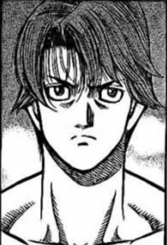

Haruo Miyata possède une apparence plutôt classique pour un adolescent de son âge ne possédant aucun attribut physique sortant vraiment de l'ordinaire.
Haruo a une couleur de peau légèrement cuivrée au teint blanc plutôt classique pour un Japonais. Son visage est quant à lui composé de traits fins et vraisemblablement dénués de défauts apparants. Pour entrer dans les détails à propos de ce visage ; ce dernier est pourvu d'un menton légèrement triangulaire, de fines lèvres rosâtre, d'un nez concave, d'yeux plutôt rond pour un Japonais avec des iris bruns clairs ainsi que de fines sourcils de même couleurs. Les cheveux du Japonais sont à l'image de ses yeux ainsi que de ses sourcils ; c'est-à-dire d'un teint brun éclairci ; ses derniers sont lisses tombent et s'étendent ainsi jusqu'à la base de son cou, il se peut que ses derniers puissent de leur longueur gêner la vision du jeune garçon.
D'une manière générale, Haruo est plutôt petit pour son âge et peut même de plus semblerplutôt maigre, il fait à ses 15 ans exactement 165 cm pour 49 kilos. Mais cela ne l'empêche pas de posséder une certaine musculature contrairement à ce que sa carrure pourrait laisser croire : même si ses bras ou encore ses jambes sont à l'image du reste de son corps plutôt fins, des muscles y restent un minimum apparent. De la même manière, le torse du japonais est quant à lui que ce soit au niveau de ses pectoraux ou de ses abdos plutôt déssiné sans être non plus très impressionant. Le dos de Haruo à de la même manière une musculature similaire à ce que j'ai pu décrire plus tôt; le tout montrant que le brun est sportif.
Le japonais serait donc normalement considéré que ce soit grâce à son visage ou grâce à son corps comme étant plutôt beau sans non plus être totalement parfait.
Le style vestimentaire de Haruo n'a rien de vraiment spécial, au contraire il est même plutôt ordinaire dans de nombreux aspects.
Le japonais porte donc généralement des vêtements plutôt classique : généralement des t-shirts ou des shorts assez simplistes. Il peut évidemment porter autre chose si le temps l'exige ou des vêtement un peu plus classe lors de certaines occasions spéciales. Il porte aussi de manière générale des baskets de sport même sans activité sportive prévue. Les habits que le jeune garçon peut porter pour le moment sont des vêtements à l'aspect assez bas-de-gamme sauf quelques-un qu'il ne sort qu'à certaines occasions.
Les couleurs que préfère porté le Japonais sont principalement le violet ainsi que les couleurs pouvant y être plus ou moins associés tels que le rose ou encore le bleu par exemple excepté pour ses chaussures où il porte simplement des couleurs classique telles que du marron, du gris ou encore du noir. La seule particularité d'Haruo au niveau de ce style vestimentaire est qu'il porte régulièrement un bandeau au niveau de son front de manière à éviter que ses cheveux lui bloquent sa vision.
Décrire parfaitement la mentalité d'Haruo pourrait s'avérer assez compliqué en utilisant de simples mots : je vais tout de même essayer de vous faire comprendre au mieux la psychologie du personnage durant les quelques paragraphes qui vont suivre : que ce soit son caractère, ses qualités, ses défauts ou encore sa manière de penser…
Haruo est un garçon possédant de nombreuses qualités : plutôt gentil et amical envers les autres, il semble remarquablement joyeux dans la vie de tout les jours et n'est donc pas vraiment timide.
Il est même au contraire plutôt sociable, cela lui aura permis d'être grâce à cette personnalité plutôt ouverte assez populaire durant sa scolarité. Il n'allait malgré celà pas
rabaisser ou harceler ses camarades ; il voyait même au contraire plutôt d'un mauvais œil ceux qui pouvait s'adonner à ce genre d'activité. Il évite donc par conséquent de fréquenter ce
genre de personnes.
Le japonais est plutôt malin et intelligent sans pour autant être un génie. Cela est dû au fait qu'il est plutôt curieux, mais aussi grâce à sa très bonne mémoire.
Haruo est donc un plutôt bon stratège et dispose d'une plutôt bonne réflexion pouvant lui être utile lors de sa future carrière héroïque.
À noter que le japonais possède un certain sens de l'humour reposant principalement sur des jeux de mots, autant dire que cette dernière ne fait pas vraiment l'unanimité...
Évidemment le brun ne possède pas que des qualités, il existe de nombreux défauts pouvant lui causer du tort que ce soit dans la vie de tous les jours
ou même dans sa vie héroïque. Il possède une certaine immaturité qui est peut-être même le principal problème du jeune garçon étant donné que cette
dernière est à l'origine de la plupart des autres défauts de Haruo.
Ainsi, Haruo peut être assez rancunier et ceux même envers ses propres "alliés" pour un simple combat amical qu'il aurait perdu ou même pour des paroles
qui ne l'aurait pas plus. Évidemment, il n'ira pas faire de folie pour une simple amertume de ce type. Il est aussi du genre à juger les gens assez vite
et donc de se faire une image de ses derniers assez rapidement, image qui aura rarement tendance à évoluer à moins qu'un événement marquant vienne chambouler
cette dernière.
Il est aussi a remarqué que le jeune garçon possède une certaine arrogance, il faut dire que le fait de faire partie de l'infime partie de la population possédant un
alter potable boost considérablement l'ego.
Malgré tout, Haruo étant plutôt poli, ses défauts ne se verront donc pas forcément en temps normal.
Une chose étonnante à propos de Haruo est malgré la possession d'un alter sa connaissance assez limitée du monde héroïque. Le japonais ne s'est jamais vraiment
intéressé à ce domaine : n'ayant pas grandi dans un monde de ce type et ne pensant pas avoir acquis un alter suite à la nuit constellé, il n'a jamais eu
d'intérêt particulier à de ce monde même s'il connaît bien évidemment les noms les plus connus tels qu'Aiden, Light Solider ou le reste du top 10 par exemple.
Ne s'étant jamais intéressé au travail de super-héros, les motivations du brun pour exercer cette profession ne sont pas forcément très honorables. Même
si cela ne lui déplairait pas de secourir des gens ou d'arrêter des ordures, ce ne sont que des raisons superficielles. Si Haruo devient héros, c'est principalement
pour l'argent, mais aussi car on l'a un peu poussé à le devenir étant donné la rareté des alters aujourd'hui. Évidemment ça ne lui déplaît pas d'aider
des civils, mais ce n'est clairement pas sa principale motivation.
Fiche réalisé par Ewelxyn#4012.